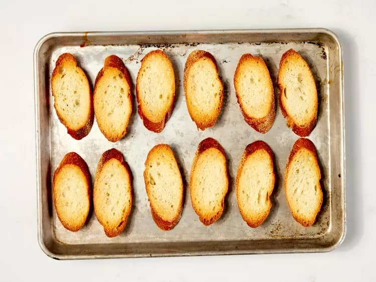

Bruschetta
Home
Description
Bruschetta is a classic Italian appetizer that is easy to
make at home. Tossed bread is topped with a mixture of juicy
tomatoes. garlic, Parmesan cheese, fresh basil, and balsamic
vinegar.
Ingredients
- 1 loaf French bread, cut into 1/4-inch slices
- 1 tablespoon extra-virgin olive oil
- 8 roma (plume) tomatoes, diced
- 1/3 cup chopped fresh basil
- 1 ounce Parmesan cheese, freshly grated
- 2 glove, minced
- 1 tablespoon good quality balsamic vinegar
- 1/4 teaspoon kosher salt
- 1/4 teaspoon freshly ground black pepper
- 2 teaspoon extra-virgin oil
Steps
- Gather all ingredients. Preheat the oven 400 degrees F
(200 degrees C)
- Brush bread slices on both sides lightly with 1 tablespoon
oil and place on large baking sheet. Toast bread until golden,
about 5 to 10 minutes, turning halfway through
- meanwhile, toss together, basil, Parmesan cheese, and gailic
in a bowl
- Mix in balsamic vinegar, 2 teaspoon olive oil, kosher salt, and pepper
- Spoon tomato mixture onto toasted bread slices
- Serve immediately and enjoy!